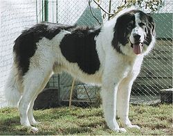

Câinele (Canis lupus familiaris) este una dintre subspeciile lupului cenușiu, fiind un mamifer carnivor din familia canidelor. Câinele este posibil să fie primul animal domesticit și cel mai folosit pentru muncă, vânătoare și companie din istoria oamenilor.
Link către pagină wiki
Clasificare științifică
| Regn: | Animalia |
| Încrengătură: | Chordata |
| Subîncrengătură: | Vertebrata |
| Clasă: | Mammalia |
| Ordin: | Carnivora |
| Familie: | Canidae |
| Gen: | Canis |
| Specie: | C. lupus |
| Subspecie: | familiaris |
Completați următorul formular pentru a vă putea recomanda o rasă potrivită:
Cele mai populare rase de câini: